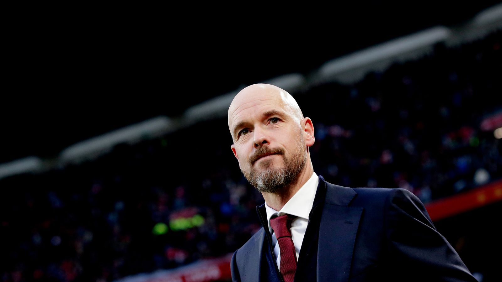

Rather than new owners sweeping into Old Trafford to inject new life into a sleeping giant of a football club, supporters have seen their rivals take the first steps in the transfer window. Of the Premier League's traditional top six -- which has expanded to seven following Newcastle United's return to the Champions League -- all but one have signed at least one new player in readiness for next season, or are at least very close to doing so. No prizes for guessing the odd one out.



| Date | Match | Time |
| Premier League | ||
| 11 Aug | BUR VS MANC | 12:00PM |
| La Liga | ||
| 11 Aug | ALM VS RAYO | 10:30AM |
| 11 Aug | SEV VS VAL | 12:30PM |
| 11 Aug | BAR VS RM | 10:30AM |
| 15 Aug | LIV VS MANC | 12:30PM |
| 16 Aug | ALM VS RAYO | 10:30AM |
| 18 Aug | MANU VS CHEL | 12:30PM |
| 19 Aug | MANU VS MANC | 14:30AM |
| 21 Aug | SEV VS VAL | 12:30PM |
| 22 Aug | RM VS VAL | 10:30AM |
| 24 Aug | PSG VS OL | 12:30PM |
| 25 Aug | AL-hilal vs Al-Nassar | 10:30AM |
| 31 Aug | SEV VS VAL | 1:30PM |
Advt
Footer